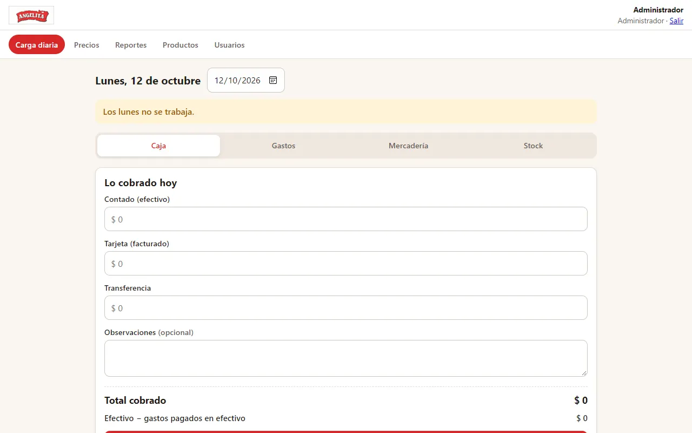
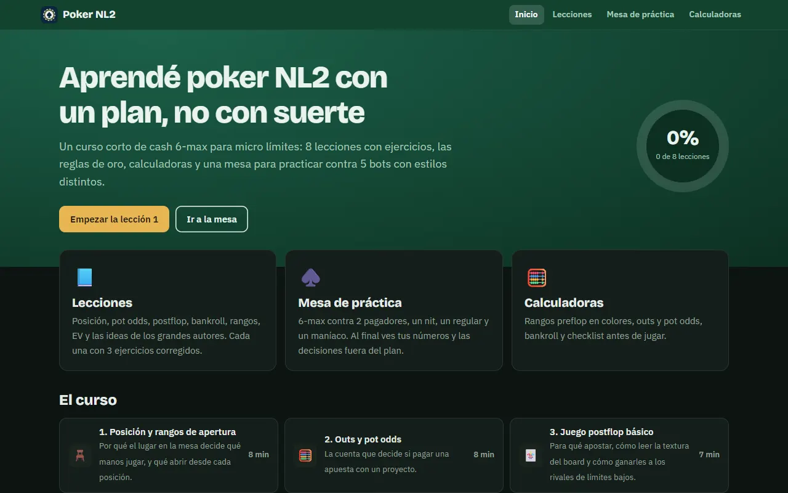
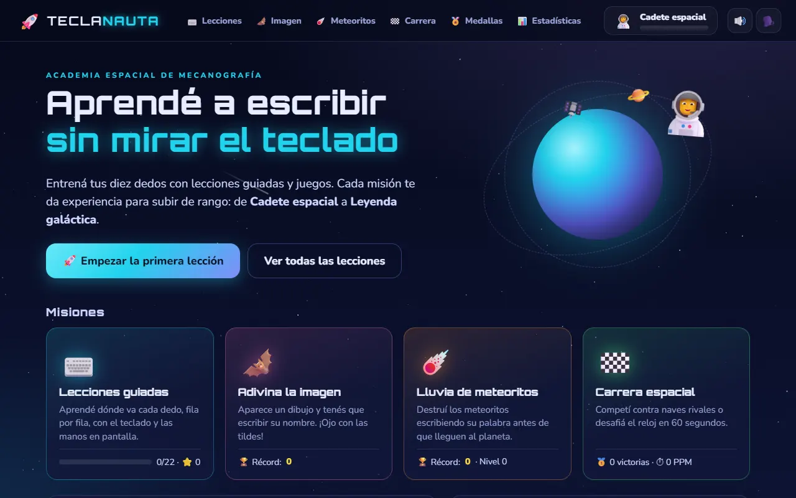
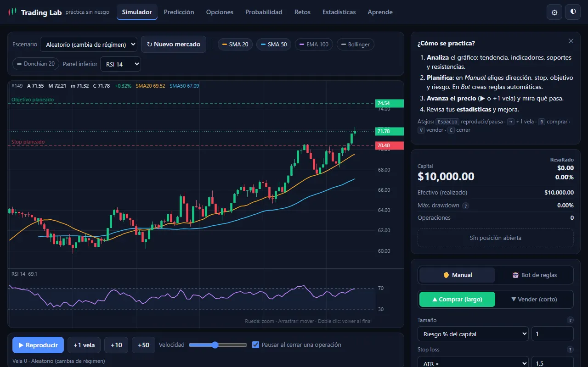
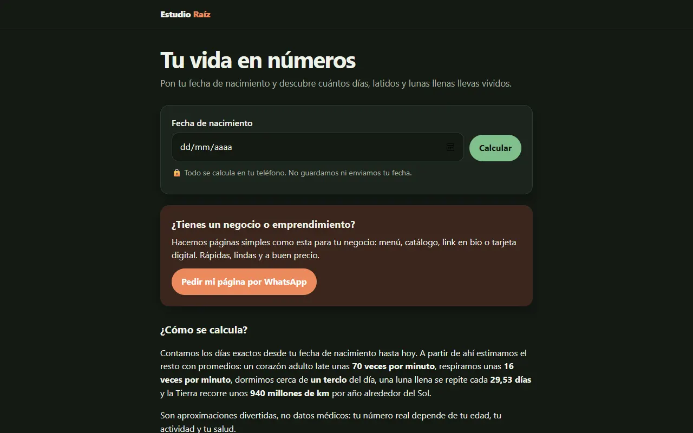

Protegemos
Aseguramos tu nombre antes de que inviertas en él.
- Búsqueda de antecedentes
- Registro de marca INPI
- Vigilancia y oposiciones
- Renovaciones y cesiones
E S T U D I O RAÍZ
Registro en INPI, identidad visual y marketing digital. Un solo equipo, de punta a punta.
Qué es Estudio Raíz
Un gestor para el INPI, un diseñador para el logo, otro para las redes. Así salen las marcas inconsistentes y desprotegidas. Nosotros integramos las tres áreas.
Aseguramos tu nombre antes de que inviertas en él.
Definimos cómo te ve el mercado, con criterio estratégico.
Ponemos la marca a trabajar para conseguir clientes.
Protección, diseño y difusión bajo un mismo criterio.
Seguimos el expediente, los plazos y el crecimiento.
Paquetes cerrados y escalonados, sin sorpresas.
Salud, estudios profesionales, comercios y emprendedores.
Quiénes somos
La parte legal y la parte comercial de tu marca, resueltas por quienes las hacen.
Agente matriculado INPI
Ingeniero industrial especializado en registro y protección de marcas ante el INPI. Experiencia en liderazgo de operaciones y cumplimiento normativo.
Ver perfil en LinkedIn de Daniel Franco DibEspecialista en Marketing y Neuromarketing
Más de 20 años en marketing y neuromarketing. Diseña e implementa estrategias de crecimiento integral para marcas.
Ver perfil en LinkedIn de Eliana Carrizo DreerRevisamos tu marca, tu rubro y tus riesgos.
Plan por escrito, con alcance y plazos cerrados.
Registro, identidad y puesta en marcha.
La marca sale a competir y la seguimos.
Trabajos realizados
Además de proteger y diseñar marcas, desarrollamos sitios y aplicaciones a medida. Estos son proyectos reales, publicados y en uso.

App de gestión a medida para una carnicería
Carga diaria de caja, gastos, mercadería y conteo de stock desde el celular. Calcula el control semanal de sobrantes y faltantes, guarda el historial de precios y exporta a Excel.
Ver la app → Acceso solo con usuario y clave del negocio

Plataforma educativa con simulador
Curso interactivo de 8 lecciones con ejercicios corregidos al instante, una mesa de práctica contra 5 bots con estilos distintos y calculadoras de rangos y probabilidades.



¿Necesitás una web, una app de gestión o una herramienta para tu negocio?
Contanos tu ideaSin cargo · Sin registrarte
Escribí el nombre que querés registrar y hacé una primera verificación orientativa. Es el mismo punto de partida con el que arrancamos cada proyecto.
Consulta para
Esta búsqueda es orientativa y no constituye un informe oficial del INPI. En la reunión diagnóstico hacemos la búsqueda detallada de antecedentes, por clase de Niza y con análisis fonético.
Quiero la búsqueda detallada gratuitaReunión diagnóstico
Es una reunión gratuita, sin compromiso, presencial o por videollamada. Revisamos en qué estado está tu marca hoy y te decimos exactamente qué te falta.
Respondemos todas las consultas en menos de 24 horas hábiles.
Abrimos WhatsApp con tu consulta escrita. Si no se abrió, tocá acá para abrirlo. Te respondemos en menos de 24 horas hábiles para coordinar la reunión.
El costo de no registrar
No es un solo problema: es una cadena. Cada eslabón arrastra al siguiente, y ninguno es opcional una vez que el nombre dejó de ser tuyo.
Una carta documento te fija un plazo para dejar de usar el nombre: en el local, en las redes, en las facturas, en el packaging. No es una negociación entre iguales: el registro lo tiene la otra parte.
Si no cesás, sigue el reclamo por cese de uso y daños: años de honorarios, pericias y costas. Y mientras dura, cada peso que invertís en difundir tu marca va a un nombre que tal vez abandones igual.
Nombre nuevo, logo nuevo, identidad completa de vuelta. Y esta vez no es una inversión, es una reposición: gastás de nuevo lo que ya gastaste para volver al punto donde ya estabas.
Cartelería, frente del local, papelería, sellos, recetarios, uniformes, vehículos, packaging, etiquetas. Cada objeto con el nombre viejo hay que producirlo otra vez, y hasta que esté, seguís mostrando una marca que ya no podés usar.
Dominio y casillas nuevas, redes con otro usuario y sin el arrastre que tenían, ficha de Google de cero. Las reseñas acumuladas durante años no se pueden migrar, y el posicionamiento vuelve a foja cero.
Contratos, habilitaciones, registros sanitarios o de producto, avisos a obras sociales, colegios profesionales y marketplaces. Nada de esto se luce: solo consume semanas de tu equipo.
Los años de boca a boca quedaron pegados a un nombre que ahora es de otro: quien te recomienda usa el nombre viejo y quien te busca encuentra a alguien más. Ese capital no se recompra. Se repone esperando otra vez lo mismo que ya esperaste.
Nada de esta cadena se dispara por haber hecho algo mal. Se dispara porque alguien llegó primero al INPI. Y el único momento en que se puede evitar es antes.
Quiero saber si mi marca está expuestaPreguntas frecuentes
Es la creencia que más caro sale. En Argentina el derecho exclusivo nace con el registro, no con el uso: quien registra primero puede impedirle usar la marca al resto, incluso a quien la venía usando desde antes.
Y la antigüedad juega en tu contra. Cuanto más años lleva tu nombre en la calle, más vale y más atractivo se vuelve para que otro lo registre. El trabajo de años es justamente lo que lo convierte en un objetivo.
Puede intimarte por carta documento y, si no cesás, reclamarte judicialmente el cese de uso y los daños. En los hechos: rehacer tu identidad, reponer todo lo impreso, mudar tu presencia digital y actualizar contratos y habilitaciones. Todo junto, y en el momento que elige otro.
La cadena completa está detallada en qué se activa el día que otro registra tu nombre.
Presentar la solicitud lo puede hacer cualquiera. El problema es que el formulario no avisa cuando te equivocás: elegir mal las clases o no detectar un antecedente produce un registro que parece válido durante años y falla justo el día que lo necesitás.
Corregirlo implica presentar de nuevo, con una fecha de prioridad nueva: perdés todo el tiempo ganado. El ahorro inicial se paga con lo único que no se puede recomprar, que es la antigüedad.
Registrar cuesta lo mismo hoy que en tres años, pero lo que arriesgás se multiplica. Hoy cambiarías un logo y un usuario de Instagram. En tres años, cartelería, packaging, uniformes, dominio, reseñas y la cabeza de todos tus clientes.
Y crecer es lo que te hace visible: cuanto mejor te va, más gente ve que ese nombre funciona y está libre. Esperar a ser grande es esperar al momento en que más tenés para perder.
No, y el malentendido es caro porque da una seguridad que no existe. La inscripción impositiva, la razón social y el dominio son tres trámites distintos, en tres organismos distintos. Ninguno te da exclusividad sobre el nombre frente a terceros.
Podés estar perfectamente inscripto en los tres y recibir igual una intimación del titular de la marca.
Si nadie se opone ni hay observaciones, suele resolverse en 12 a 18 meses. Concedida, la marca dura 10 años y se renueva indefinidamente.
Lo que más importa es otro dato: la prioridad se cuenta desde que se presenta, no desde que se concede. Es una fila, y el lugar se toma presentando. Cada día sin presentar es un día en que otro puede ponerse adelante.
No siempre. Las marcas se registran por clases, y un nombre similar en un rubro distinto puede convivir sin conflicto. Por eso el primer paso es la búsqueda de antecedentes: coincidencias idénticas, fonéticas y gráficas dentro de tu clase.
Lo importante es el orden. Averiguarlo ahora es información para decidir; averiguarlo con la intimación en la mano es un problema que ya tenés.
Es el mejor momento, de lejos. La búsqueda de antecedentes te dice si vale la pena seguir invirtiendo en ese nombre o si conviene ajustarlo antes de que exista en algún lado.
Cambiar un nombre que todavía está en tu cabeza no cuesta nada. Cambiarlo cuando ya está en la fachada y en la boca de tus clientes cuesta todo lo de arriba. Misma decisión, dos precios completamente distintos.
Tu caso tiene detalles que ninguna respuesta general puede cubrir.
Revisémoslo en la reunión gratuita